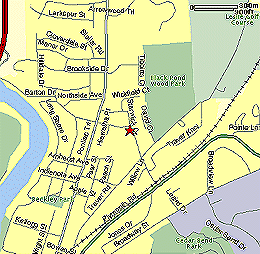

|
Directions to Northside! |
|
|  | Northside Elementary - 912 Barton Dr. Take Hill Street West to Division. Turn right on Division and head northbound until it turns into Plymouth. Continue on Plymouth Road to Barton Drive (near Leslie Science Center). Take a left across the train tracks. Northside is on your left. for more info, contact Cathie Hawke |